411 lugares
 Museo y yacimiento de AfrodisiasAydın · Yacimiento arqueológico
Museo y yacimiento de AfrodisiasAydın · Yacimiento arqueológico Yacimiento de AniKars · Yacimiento arqueológico
Yacimiento de AniKars · Yacimiento arqueológico Yacimiento de ArslantepeMalatya · Yacimiento arqueológico
Yacimiento de ArslantepeMalatya · Yacimiento arqueológico Acrópolis de PérgamoIzmir · Yacimiento arqueológico
Acrópolis de PérgamoIzmir · Yacimiento arqueológico Asclepeion de PérgamoIzmir · Yacimiento arqueológico
Asclepeion de PérgamoIzmir · Yacimiento arqueológico Basílica Roja de BergamaIzmir · Yacimiento arqueológico
Basílica Roja de BergamaIzmir · Yacimiento arqueológico Ciudad subterránea de DerinkuyuNevşehir · Ciudad subterránea
Ciudad subterránea de DerinkuyuNevşehir · Ciudad subterránea ÉfesoIzmir · Yacimiento arqueológico
ÉfesoIzmir · Yacimiento arqueológico Iglesia de El NazarNevşehir · Edificio religioso
Iglesia de El NazarNevşehir · Edificio religioso Museo de GordionAnkara · Museo
Museo de GordionAnkara · Museo GöbeklitepeŞanlıurfa · Yacimiento arqueológico
GöbeklitepeŞanlıurfa · Yacimiento arqueológico Museo al Aire Libre de GöremeNevşehir · Yacimiento arqueológico
Museo al Aire Libre de GöremeNevşehir · Yacimiento arqueológico HattusaÇorum · Yacimiento arqueológico
HattusaÇorum · Yacimiento arqueológico Yacimiento de Hierápolis (Pamukkale)Denizli · Yacimiento arqueológico
Yacimiento de Hierápolis (Pamukkale)Denizli · Yacimiento arqueológico Iglesia Oscura (Göreme)Nevşehir · Edificio religioso
Iglesia Oscura (Göreme)Nevşehir · Edificio religioso Ciudad subterránea de KaymaklıNevşehir · Ciudad subterránea
Ciudad subterránea de KaymaklıNevşehir · Ciudad subterránea Monte NemrutAdıyaman · Yacimiento arqueológico
Monte NemrutAdıyaman · Yacimiento arqueológico TroyaÇanakkale · Yacimiento arqueológico
TroyaÇanakkale · Yacimiento arqueológico Yacimiento de JantoAntalya · Yacimiento arqueológico
Yacimiento de JantoAntalya · Yacimiento arqueológico Yacimiento de Zelve y PaşabağlarıNevşehir · Yacimiento arqueológico
Yacimiento de Zelve y PaşabağlarıNevşehir · Yacimiento arqueológico Yacimiento de ÇatalhöyükKonya · Yacimiento arqueológico
Yacimiento de ÇatalhöyükKonya · Yacimiento arqueológico Çavuşin (Iglesia de Çavuşin)Nevşehir · Yacimiento arqueológico
Çavuşin (Iglesia de Çavuşin)Nevşehir · Yacimiento arqueológico Museo de la Democracia del 15 de JulioAnkara · Museo
Museo de la Democracia del 15 de JulioAnkara · Museo Museo Adam MickiewiczEstambul · Museo
Museo Adam MickiewiczEstambul · Museo Casa Museo de Atatürk en AdanaAdana · Museo
Casa Museo de Atatürk en AdanaAdana · Museo Museo de AdanaAdana · Museo
Museo de AdanaAdana · Museo Museo de AdıyamanAdıyaman · Museo
Museo de AdıyamanAdıyaman · Museo Museo de AfyonkarahisarAfyonkarahisar · Museo
Museo de AfyonkarahisarAfyonkarahisar · Museo Yacimiento del Ágora de EsmirnaIzmir · Yacimiento arqueológico
Yacimiento del Ágora de EsmirnaIzmir · Yacimiento arqueológico Museo de AhlatBitlis · Museo
Museo de AhlatBitlis · Museo Cementerio selyúcida de AhlatBitlis · Yacimiento arqueológico
Cementerio selyúcida de AhlatBitlis · Yacimiento arqueológico Sinagoga AhridaEstambul · Edificio religiosoYacimiento de EgasManisa · Yacimiento arqueológico
Sinagoga AhridaEstambul · Edificio religiosoYacimiento de EgasManisa · Yacimiento arqueológico Yacimiento de AizanoiKütahya · Yacimiento arqueológicoMuseo Monumento de AkdamarVan · MuseoValle de los Monasterios de AksarayAksaray · Yacimiento arqueológico
Yacimiento de AizanoiKütahya · Yacimiento arqueológicoMuseo Monumento de AkdamarVan · MuseoValle de los Monasterios de AksarayAksaray · Yacimiento arqueológico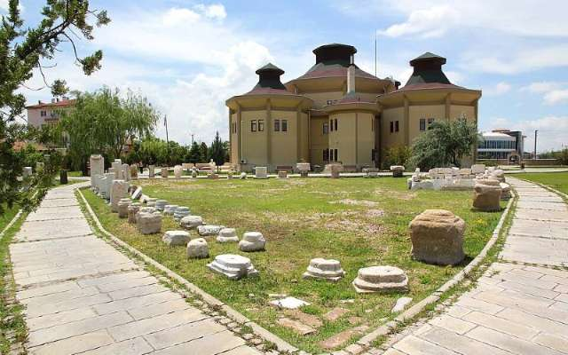
Museo de AksarayAksaray · Museo Museo Arqueológico y Etnográfico Nasreddin Hoca de AkşehirKonya · MuseoTumba de AkşemseddinBolu · Edificio religioso
Museo Arqueológico y Etnográfico Nasreddin Hoca de AkşehirKonya · MuseoTumba de AkşemseddinBolu · Edificio religioso Yacimiento de AlabandaAydın · Yacimiento arqueológico
Yacimiento de AlabandaAydın · Yacimiento arqueológico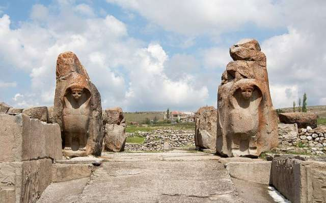
Museo y yacimiento de AlacahöyükÇorum · Yacimiento arqueológicoCasa Museo Alaeddin YavaşçaKilis · Museo Monasterio de AlahanMersin · Edificio religiosoCasa Museo de Atatürk en AlanyaAntalya · Museo
Monasterio de AlahanMersin · Edificio religiosoCasa Museo de Atatürk en AlanyaAntalya · Museo Castillo de AlanyaAntalya · Castillo y edificio histórico
Castillo de AlanyaAntalya · Castillo y edificio histórico Museo de AlanyaAntalya · Museo
Museo de AlanyaAntalya · Museo Yacimiento de Alaşehir (Filadelfia)Manisa · Yacimiento arqueológico
Yacimiento de Alaşehir (Filadelfia)Manisa · Yacimiento arqueológico Yacimiento de Alejandría de TróadeÇanakkale · Yacimiento arqueológico
Yacimiento de Alejandría de TróadeÇanakkale · Yacimiento arqueológico Yacimiento de AlindaAydın · Yacimiento arqueológico
Yacimiento de AlindaAydın · Yacimiento arqueológico Museo de AmasraBartın · Museo
Museo de AmasraBartın · Museo Museo de AmasyaAmasya · Museo
Museo de AmasyaAmasya · Museo Tumba rupestre de AmintasMuğla · Yacimiento arqueológico
Tumba rupestre de AmintasMuğla · Yacimiento arqueológico Museo de las Civilizaciones de AnatoliaAnkara · MuseoMuseo de AnamurMersin · Museo
Museo de las Civilizaciones de AnatoliaAnkara · MuseoMuseo de AnamurMersin · Museo Yacimiento de AnavarzaAdana · Yacimiento arqueológico
Yacimiento de AnavarzaAdana · Yacimiento arqueológico Yacimiento de AnemurioMersin · Yacimiento arqueológico
Yacimiento de AnemurioMersin · Yacimiento arqueológico Casa Museo de Atatürk en AntalyaAntalya · Museo
Casa Museo de Atatürk en AntalyaAntalya · Museo Museo Etnográfico de AntalyaAntalya · Museo
Museo Etnográfico de AntalyaAntalya · Museo Museo de AntalyaAntalya · MuseoMuseo de la Necrópolis de AntalyaAntalya · Museo
Museo de AntalyaAntalya · MuseoMuseo de la Necrópolis de AntalyaAntalya · Museo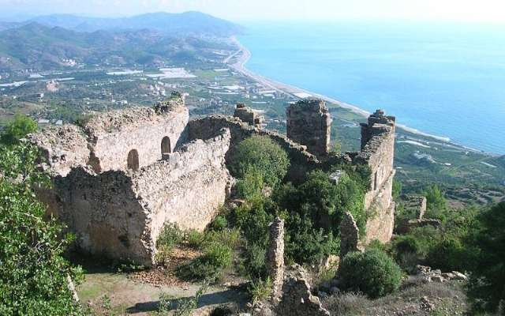
Ciudad antigua de SyedraAntalya · Yacimiento arqueológico Yacimiento de Antioquía de PisidiaIsparta · Yacimiento arqueológico
Yacimiento de Antioquía de PisidiaIsparta · Yacimiento arqueológico Iglesia de AntiphonitisGirne (Kyrenia) · Edificio religioso
Iglesia de AntiphonitisGirne (Kyrenia) · Edificio religioso Yacimiento de Apolo EsmintioÇanakkale · Yacimiento arqueológico
Yacimiento de Apolo EsmintioÇanakkale · Yacimiento arqueológico Monasterio de Apostolos Andreasİskele (Trikomo) · Edificio religioso
Monasterio de Apostolos Andreasİskele (Trikomo) · Edificio religioso Yacimiento de ArsameiaAdıyaman · Yacimiento arqueológico
Yacimiento de ArsameiaAdıyaman · Yacimiento arqueológico Yacimiento de ArykandaAntalya · Yacimiento arqueológico
Yacimiento de ArykandaAntalya · Yacimiento arqueológico AspendosAntalya · Yacimiento arqueológico
AspendosAntalya · Yacimiento arqueológico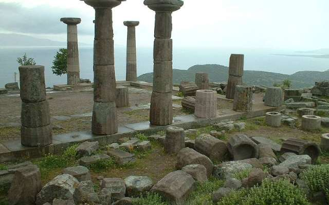
Yacimiento de AssosÇanakkale · Yacimiento arqueológicoCasa Museo de Atatürk en DiyarbakırDiyarbakır · MuseoMuseo de Atatürk y Etnografía de UşakUşak · Museo Museo Atatürk, Redif y EtnografíaKocaeli · Museo
Museo Atatürk, Redif y EtnografíaKocaeli · Museo Museo del Cine de Estambul Atlas 1948Estambul · Museo
Museo del Cine de Estambul Atlas 1948Estambul · Museo Museo Palacio del Pabellón de CazaKocaeli · Museo
Museo Palacio del Pabellón de CazaKocaeli · Museo Santa IreneEstambul · Edificio religioso
Santa IreneEstambul · Edificio religioso Museo de Historia y Experiencia de Santa SofíaEstambul · Museo
Museo de Historia y Experiencia de Santa SofíaEstambul · Museo Gran Mezquita de Santa SofíaEstambul · Edificio religioso
Gran Mezquita de Santa SofíaEstambul · Edificio religioso Basílica de San Juan (Ayasuluk)Izmir · Yacimiento arqueológico
Basílica de San Juan (Ayasuluk)Izmir · Yacimiento arqueológico Castillo de AyasulukIzmir · Castillo y edificio histórico
Castillo de AyasulukIzmir · Castillo y edificio histórico Museo Arqueológico de AydınAydın · MuseoBasílica de Ayia Triasİskele (Trikomo) · Edificio religioso
Museo Arqueológico de AydınAydın · MuseoBasílica de Ayia Triasİskele (Trikomo) · Edificio religioso Museo Monumento de San NicolásAntalya · MuseoCiudad subterránea de San MercurioAksaray · Ciudad subterránea
Museo Monumento de San NicolásAntalya · MuseoCiudad subterránea de San MercurioAksaray · Ciudad subterránea Museo Aşık VeyselSivas · Museo
Museo Aşık VeyselSivas · Museo Aşıklı HöyükAksaray · Yacimiento arqueológicoMuseo de BafraSamsun · Museo
Aşıklı HöyükAksaray · Yacimiento arqueológicoMuseo de BafraSamsun · Museo Balıklıgöl (Estanque de los Peces Sagrados)Şanlıurfa · Edificio religioso
Balıklıgöl (Estanque de los Peces Sagrados)Şanlıurfa · Edificio religioso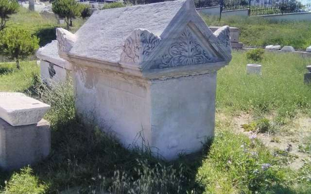
Museo de BandırmaBalıkesir · Museo Museo del Cuartel General del Frente OccidentalKonya · Museo
Museo del Cuartel General del Frente OccidentalKonya · Museo Museo Baksı de BayburtBayburt · Museo
Museo Baksı de BayburtBayburt · Museo Abadía de BellapaisGirne (Kyrenia) · Edificio religioso
Abadía de BellapaisGirne (Kyrenia) · Edificio religioso Museo de BergamaIzmir · MuseoMuseo Etnográfico de Beşkonaklar y Casa Tradicional de MalatyaMalatya · MuseoMuseo de BilecikBilecik · Museo
Museo de BergamaIzmir · MuseoMuseo Etnográfico de Beşkonaklar y Casa Tradicional de MalatyaMalatya · MuseoMuseo de BilecikBilecik · Museo Mansión Çakırağa de BirgiIzmir · MuseoMuseo Etnográfico de BitlisBitlis · Museo
Mansión Çakırağa de BirgiIzmir · MuseoMuseo Etnográfico de BitlisBitlis · Museo Yacimiento de BlaundosUşak · Yacimiento arqueológico
Yacimiento de BlaundosUşak · Yacimiento arqueológico Teatro antiguo de BodrumMuğla · Yacimiento arqueológicoSala del Pecio de Vidrio de Serçe Limanı (Bodrum)Muğla · Museo
Teatro antiguo de BodrumMuğla · Yacimiento arqueológicoSala del Pecio de Vidrio de Serçe Limanı (Bodrum)Muğla · Museo Museo de Arqueología Subacuática de BodrumMuğla · Museo
Museo de Arqueología Subacuática de BodrumMuğla · Museo Museo de BoluBolu · Museo
Museo de BoluBolu · Museo Museo de BoğazköyÇorum · Museo
Museo de BoğazköyÇorum · Museo Castillo de BuffaventoGirne (Kyrenia) · Castillo y edificio histórico
Castillo de BuffaventoGirne (Kyrenia) · Castillo y edificio histórico Iglesia búlgara de San Esteban (Iglesia de Hierro)Estambul · Edificio religioso
Iglesia búlgara de San Esteban (Iglesia de Hierro)Estambul · Edificio religioso Museo de BurdurBurdur · Museo
Museo de BurdurBurdur · Museo Museo Arqueológico de BursaBursa · Museo
Museo Arqueológico de BursaBursa · Museo Casa Museo de Atatürk en BursaBursa · Museo
Casa Museo de Atatürk en BursaBursa · Museo Museo de Arte Turco e Islámico de BursaBursa · Museo
Museo de Arte Turco e Islámico de BursaBursa · Museo Gran Mezquita de BursaBursa · Edificio religioso
Gran Mezquita de BursaBursa · Edificio religioso Mezquita Verde y Mausoleo Verde de BursaBursa · Edificio religiosoBasílica del Lago de İznikBursa · Edificio religioso
Mezquita Verde y Mausoleo Verde de BursaBursa · Edificio religiosoBasílica del Lago de İznikBursa · Edificio religioso Büyük HanLefkoşa (Nicosia) · Castillo y edificio histórico
Büyük HanLefkoşa (Nicosia) · Castillo y edificio histórico Museo de los Mosaicos del Gran PalacioEstambul · Museo
Museo de los Mosaicos del Gran PalacioEstambul · Museo Casa de Cahit Sıtkı Tarancı - Museo EtnográficoDiyarbakır · MuseoCuevas de CehennemağzıZonguldak · Espacio natural
Casa de Cahit Sıtkı Tarancı - Museo EtnográficoDiyarbakır · MuseoCuevas de CehennemağzıZonguldak · Espacio natural Museo de la RepúblicaAnkara · Museo
Museo de la RepúblicaAnkara · Museo Yacimiento de DaraMardin · Yacimiento arqueológico
Yacimiento de DaraMardin · Yacimiento arqueológico Museo de Atatürk y Etnografía de DenizliDenizli · Museo
Museo de Atatürk y Etnografía de DenizliDenizli · Museo Museo de la Ciudad de DenizliDenizli · Museo
Museo de la Ciudad de DenizliDenizli · Museo Yacimiento de TrípolisDenizli · Yacimiento arqueológico
Yacimiento de TrípolisDenizli · Yacimiento arqueológico Mansión de Derviş PaşaLefkoşa (Nicosia) · Museo
Mansión de Derviş PaşaLefkoşa (Nicosia) · Museo Monasterio de DeyrulzafaranMardin · Edificio religioso
Monasterio de DeyrulzafaranMardin · Edificio religioso Templo de Apolo en DídimaAydın · Yacimiento arqueológico
Templo de Apolo en DídimaAydın · Yacimiento arqueológico Gran Mezquita y Hospital de DivriğiSivas · Edificio religioso
Gran Mezquita y Hospital de DivriğiSivas · Edificio religioso Museo Arqueológico de DiyarbakırDiyarbakır · Museo
Museo Arqueológico de DiyarbakırDiyarbakır · Museo Gran Mezquita de DiyarbakırDiyarbakır · Edificio religioso
Gran Mezquita de DiyarbakırDiyarbakır · Edificio religioso Palacio de DolmabahçeEstambul · Castillo y edificio históricoMuseo de Historia NaturalBurdur · Museo
Palacio de DolmabahçeEstambul · Castillo y edificio históricoMuseo de Historia NaturalBurdur · Museo Gran Sinagoga de EdirneEdirne · Edificio religiosoMuseo de Historia de los Balcanes del Bastión de HıdırlıkEdirne · Museo
Gran Sinagoga de EdirneEdirne · Edificio religiosoMuseo de Historia de los Balcanes del Bastión de HıdırlıkEdirne · Museo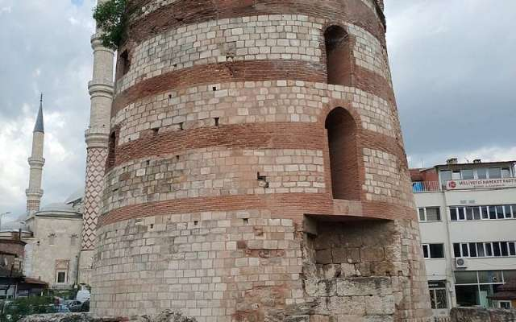
Torre Macedonia de EdirneEdirne · Castillo y edificio histórico Museo de EdirneEdirne · Museo
Museo de EdirneEdirne · Museo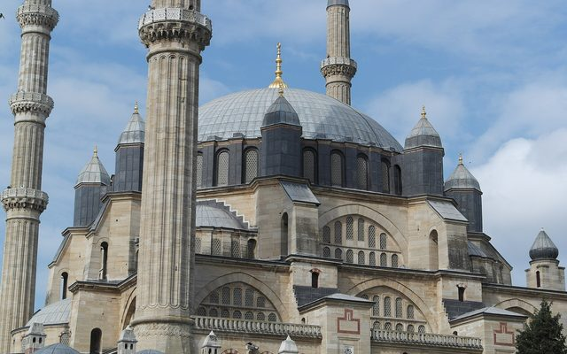
Mezquita Selimiye de EdirneEdirne · Edificio religiosoMuseo de la Experiencia de ÉfesoIzmir · Museo Museo de ÉfesoIzmir · Museo
Museo de ÉfesoIzmir · Museo Casas del Ladera de ÉfesoIzmir · Yacimiento arqueológicoMuseo de ElazığElazığ · MuseoMuseo de la Ciudad de ElbistanKahramanmaraş · MuseoMuseo de ElmalıAntalya · Museo
Casas del Ladera de ÉfesoIzmir · Yacimiento arqueológicoMuseo de ElazığElazığ · MuseoMuseo de la Ciudad de ElbistanKahramanmaraş · MuseoMuseo de ElmalıAntalya · Museo Yacimiento de Enkomi (Alasia)Gazimağusa (Famagusta) · Yacimiento arqueológicoMuseo de EreğliKonya · MuseoMuseo Arqueológico y Etnográfico Ahmet Keleşoğlu de ErmenekKaraman · Museo
Yacimiento de Enkomi (Alasia)Gazimağusa (Famagusta) · Yacimiento arqueológicoMuseo de EreğliKonya · MuseoMuseo Arqueológico y Etnográfico Ahmet Keleşoğlu de ErmenekKaraman · Museo Museo de ErzincanErzincan · Museo
Museo de ErzincanErzincan · Museo Casa Museo de Atatürk en ErzurumErzurum · Museo
Casa Museo de Atatürk en ErzurumErzurum · Museo Castillo de ErzurumErzurum · Castillo y edificio histórico
Castillo de ErzurumErzurum · Castillo y edificio histórico Museo de ErzurumErzurum · MuseoMuseo de Pintura y Escultura de ErzurumErzurum · Museo
Museo de ErzurumErzurum · MuseoMuseo de Pintura y Escultura de ErzurumErzurum · Museo Museo Arqueológico EtiEskişehir · Museo
Museo Arqueológico EtiEskişehir · Museo Museo EtnográficoAnkara · Museo
Museo EtnográficoAnkara · Museo Mezquita de Eyüp SultanEstambul · Edificio religiosoPatriarcado Ecuménico e iglesia de San JorgeEstambul · Edificio religioso
Mezquita de Eyüp SultanEstambul · Edificio religiosoPatriarcado Ecuménico e iglesia de San JorgeEstambul · Edificio religioso Isla de Gemiler (Fethiye)Muğla · Yacimiento arqueológico
Isla de Gemiler (Fethiye)Muğla · Yacimiento arqueológico Kayaköy (Fethiye)Muğla · Yacimiento arqueológico
Kayaköy (Fethiye)Muğla · Yacimiento arqueológico Yacimiento del Letoon (Fethiye)Muğla · Yacimiento arqueológico
Yacimiento del Letoon (Fethiye)Muğla · Yacimiento arqueológico Museo FethiyeEstambul · MuseoMuseo de FethiyeMuğla · Museo
Museo FethiyeEstambul · MuseoMuseo de FethiyeMuğla · Museo Yacimiento de Pinara (Fethiye)Muğla · Yacimiento arqueológico
Yacimiento de Pinara (Fethiye)Muğla · Yacimiento arqueológico Yacimiento de Tlos (Fethiye)Muğla · Yacimiento arqueológicoYacimiento de Filyos (Tios)Zonguldak · Yacimiento arqueológico
Yacimiento de Tlos (Fethiye)Muğla · Yacimiento arqueológicoYacimiento de Filyos (Tios)Zonguldak · Yacimiento arqueológico Museo de la Casa Mevleví de GálataEstambul · Museo
Museo de la Casa Mevleví de GálataEstambul · Museo Museo GaziSamsun · Museo
Museo GaziSamsun · Museo Museo Arqueológico de GaziantepGaziantep · Museo
Museo Arqueológico de GaziantepGaziantep · Museo Castillo de GaziantepGaziantep · Castillo y edificio históricoÁrea de mosaicos de GermaniciaKahramanmaraş · Yacimiento arqueológicoMuseo de GiresunGiresun · Museo
Castillo de GaziantepGaziantep · Castillo y edificio históricoÁrea de mosaicos de GermaniciaKahramanmaraş · Yacimiento arqueológicoMuseo de GiresunGiresun · Museo Castillo de Kyrenia y Museo del NaufragioGirne (Kyrenia) · Castillo y edificio histórico
Castillo de Kyrenia y Museo del NaufragioGirne (Kyrenia) · Castillo y edificio histórico Museo de Iconos de KyreniaGirne (Kyrenia) · Museo
Museo de Iconos de KyreniaGirne (Kyrenia) · Museo Castillo de GözneMersin · Castillo y edificio histórico
Castillo de GözneMersin · Castillo y edificio histórico Iglesia de San Juan de GülşehirNevşehir · Edificio religiosoMuseo de GümüşhaneGümüşhane · Museo
Iglesia de San Juan de GülşehirNevşehir · Edificio religiosoMuseo de GümüşhaneGümüşhane · Museo Monasterio y ciudad subterránea de GümüşlerNiğde · Ciudad subterránea
Monasterio y ciudad subterránea de GümüşlerNiğde · Ciudad subterránea Museo Etnográfico de la Mansión GüpgüpoğluKayseri · Museo
Museo Etnográfico de la Mansión GüpgüpoğluKayseri · Museo Museo de Arqueología e Historia Natural de GüzelyurtGüzelyurt (Morfou) · Museo
Museo de Arqueología e Historia Natural de GüzelyurtGüzelyurt (Morfou) · Museo Museo de HacıbektaşNevşehir · MuseoYacimiento de HadrianópolisKarabük · Yacimiento arqueológico
Museo de HacıbektaşNevşehir · MuseoYacimiento de HadrianópolisKarabük · Yacimiento arqueológico Museo Hafıza 15 de JulioEstambul · Museo
Museo Hafıza 15 de JulioEstambul · Museo Museo de Mosaicos de HaleplibahçeŞanlıurfa · MuseoBastión de Hamidiye y Museo de Historia de las Batallas de ÇanakkaleÇanakkale · Museo
Museo de Mosaicos de HaleplibahçeŞanlıurfa · MuseoBastión de Hamidiye y Museo de Historia de las Batallas de ÇanakkaleÇanakkale · Museo Castillo de HarputElazığ · Castillo y edificio histórico
Castillo de HarputElazığ · Castillo y edificio histórico Yacimiento de HarránŞanlıurfa · Yacimiento arqueológico
Yacimiento de HarránŞanlıurfa · Yacimiento arqueológico Museo y yacimiento de HasankeyfBatman · Yacimiento arqueológico
Museo y yacimiento de HasankeyfBatman · Yacimiento arqueológico Museo Arqueológico de HatayHatay · MuseoMuseo Arqueológico Necmi Asfuroğlu de HatayHatay · Museo
Museo Arqueológico de HatayHatay · MuseoMuseo Arqueológico Necmi Asfuroğlu de HatayHatay · Museo Mansión HazeranlarAmasya · Museo
Mansión HazeranlarAmasya · Museo Museo Arqueológico de Hierápolis (Pamukkale)Denizli · Museo
Museo Arqueológico de Hierápolis (Pamukkale)Denizli · Museo Castillo de HoşapVan · Castillo y edificio histórico
Castillo de HoşapVan · Castillo y edificio histórico Yacimiento de IasosMuğla · Yacimiento arqueológico
Yacimiento de IasosMuğla · Yacimiento arqueológico Valle de IhlaraAksaray · Yacimiento arqueológico
Valle de IhlaraAksaray · Yacimiento arqueológico Museo de IspartaIsparta · MuseoYacimiento de KadıkalesiAydın · Yacimiento arqueológicoMuseo de los Mártires del 15 de Julio y de la Democracia de KahramankazanAnkara · Museo
Museo de IspartaIsparta · MuseoYacimiento de KadıkalesiAydın · Yacimiento arqueológicoMuseo de los Mártires del 15 de Julio y de la Democracia de KahramankazanAnkara · Museo Museo de KahramanmaraşKahramanmaraş · Museo
Museo de KahramanmaraşKahramanmaraş · Museo Fortaleza de Yenikale en KahtaAdıyaman · Yacimiento arqueológico
Fortaleza de Yenikale en KahtaAdıyaman · Yacimiento arqueológico Museo Arqueológico de Kaman KalehöyükKırşehir · Yacimiento arqueológico
Museo Arqueológico de Kaman KalehöyükKırşehir · Yacimiento arqueológico Yacimiento de KanlıdivaneMersin · Yacimiento arqueológico
Yacimiento de KanlıdivaneMersin · Yacimiento arqueológico Castillo de Kantaraİskele (Trikomo) · Castillo y edificio históricoMuseo de SafranboluKarabük · Museo
Castillo de Kantaraİskele (Trikomo) · Castillo y edificio históricoMuseo de SafranboluKarabük · Museo Museo Etnográfico de KaracasuAydın · Museo
Museo Etnográfico de KaracasuAydın · Museo Museo de Karadeniz EreğliZonguldak · Museo
Museo de Karadeniz EreğliZonguldak · Museo Yacimiento de KarahantepeŞanlıurfa · Yacimiento arqueológico
Yacimiento de KarahantepeŞanlıurfa · Yacimiento arqueológico Cueva de KarainAntalya · Espacio natural
Cueva de KarainAntalya · Espacio natural Museo de KaramanKaraman · Museo
Museo de KaramanKaraman · Museo Museo de Karatay (Museo de los Azulejos)Konya · Museo
Museo de Karatay (Museo de los Azulejos)Konya · Museo Museo y yacimiento de Karatepe-AslantaşOsmaniye · Yacimiento arqueológico
Museo y yacimiento de Karatepe-AslantaşOsmaniye · Yacimiento arqueológico Mezquita de Kariye (Chora)Estambul · Edificio religioso
Mezquita de Kariye (Chora)Estambul · Edificio religioso Museo de Historia Bélica del Frente del Cáucaso de KarsKars · Museo
Museo de Historia Bélica del Frente del Cáucaso de KarsKars · Museo Museo de KarsKars · Museo
Museo de KarsKars · Museo Yacimiento de CastabalaOsmaniye · Yacimiento arqueológicoMuseo de KastamonuKastamonu · Museo
Yacimiento de CastabalaOsmaniye · Yacimiento arqueológicoMuseo de KastamonuKastamonu · Museo Yacimiento de CaunoMuğla · Yacimiento arqueológico
Yacimiento de CaunoMuğla · Yacimiento arqueológico Museo Arqueológico de KayseriKayseri · Museo
Museo Arqueológico de KayseriKayseri · Museo Casa Museo de Atatürk en KayseriKayseri · Museo
Casa Museo de Atatürk en KayseriKayseri · Museo Ciudad subterránea de Sulu Mağara (Keskin)Kırıkkale · Ciudad subterránea
Ciudad subterránea de Sulu Mağara (Keskin)Kırıkkale · Ciudad subterránea Yacimiento de CibyraBurdur · Yacimiento arqueológicoMuseo de KilisKilis · Museo
Yacimiento de CibyraBurdur · Yacimiento arqueológicoMuseo de KilisKilis · Museo Museo del Castillo de KilitbahirÇanakkale · Museo
Museo del Castillo de KilitbahirÇanakkale · Museo Yacimiento de ClarosIzmir · Yacimiento arqueológicoYacimiento de ClazómenasIzmir · Yacimiento arqueológicoMuseo Arqueológico de KocaeliKocaeli · Museo
Yacimiento de ClarosIzmir · Yacimiento arqueológicoYacimiento de ClazómenasIzmir · Yacimiento arqueológicoMuseo Arqueológico de KocaeliKocaeli · Museo Museo de KonuralpDüzce · Museo
Museo de KonuralpDüzce · Museo Museo Arqueológico de KonyaKonya · Museo
Museo Arqueológico de KonyaKonya · Museo Casa Museo de Atatürk en KonyaKonya · MuseoMuseo Etnográfico de KonyaKonya · Museo
Casa Museo de Atatürk en KonyaKonya · MuseoMuseo Etnográfico de KonyaKonya · Museo Casa Museo de KossuthKütahya · MuseoMuseo y yacimiento de las Tumbas RealesGazimağusa (Famagusta) · Yacimiento arqueológicoMuseo de la Guerra de IndependenciaAnkara · Museo
Casa Museo de KossuthKütahya · MuseoMuseo y yacimiento de las Tumbas RealesGazimağusa (Famagusta) · Yacimiento arqueológicoMuseo de la Guerra de IndependenciaAnkara · Museo Museo Monumento de Kuruköprü y Casa Tradicional de AdanaAdana · Museo
Museo Monumento de Kuruköprü y Casa Tradicional de AdanaAdana · Museo Museo Kuva-yi MilliyeBalıkesir · Museo
Museo Kuva-yi MilliyeBalıkesir · Museo Yacimiento de KültepeKayseri · Yacimiento arqueológicoMuseo de KütahyaKütahya · MuseoIglesia de Santa Ana (Pequeña Ayvasıl)Trebisonda · Edificio religiosoMuseo de KırklareliKırklareli · MuseoMuseo de KırşehirKırşehir · Museo
Yacimiento de KültepeKayseri · Yacimiento arqueológicoMuseo de KütahyaKütahya · MuseoIglesia de Santa Ana (Pequeña Ayvasıl)Trebisonda · Edificio religiosoMuseo de KırklareliKırklareli · MuseoMuseo de KırşehirKırşehir · Museo Torre de la DoncellaEstambul · Castillo y edificio histórico
Torre de la DoncellaEstambul · Castillo y edificio histórico Yacimiento de LabraundaMuğla · Yacimiento arqueológico
Yacimiento de LabraundaMuğla · Yacimiento arqueológico Yacimiento de LaginaMuğla · Yacimiento arqueológico
Yacimiento de LaginaMuğla · Yacimiento arqueológico Mezquita de Lala Mustafa PacháGazimağusa (Famagusta) · Edificio religioso
Mezquita de Lala Mustafa PacháGazimağusa (Famagusta) · Edificio religioso Yacimiento de LaodiceaDenizli · Yacimiento arqueológico
Yacimiento de LaodiceaDenizli · Yacimiento arqueológico Museo LapidarioLefkoşa (Nicosia) · MuseoMansión LatifoğluTokat · Museo
Museo LapidarioLefkoşa (Nicosia) · MuseoMansión LatifoğluTokat · Museo Museo de las Civilizaciones Licias y yacimiento de AndriakeAntalya · Yacimiento arqueológico
Museo de las Civilizaciones Licias y yacimiento de AndriakeAntalya · Yacimiento arqueológico Yacimiento de LimyraAntalya · Yacimiento arqueológicoMuseo Etnográfico de la Mansión de LivapaşaKastamonu · MuseoMuseo de la MineríaZonguldak · Museo
Yacimiento de LimyraAntalya · Yacimiento arqueológicoMuseo Etnográfico de la Mansión de LivapaşaKastamonu · MuseoMuseo de la MineríaZonguldak · Museo Yacimiento de MagnesiaAydın · Yacimiento arqueológicoCasa Memorial de Atatürk y Museo Etnográfico de MalatyaMalatya · Museo
Yacimiento de MagnesiaAydın · Yacimiento arqueológicoCasa Memorial de Atatürk y Museo Etnográfico de MalatyaMalatya · Museo Museo de MalatyaMalatya · MuseoMuseo de MalazgirtMuş · Museo
Museo de MalatyaMalatya · MuseoMuseo de MalazgirtMuş · Museo Castillo de MamureMersin · Castillo y edificio histórico
Castillo de MamureMersin · Castillo y edificio histórico Museo de Akhisar y Necrópolis de Tepe (Manisa)Manisa · Yacimiento arqueológico
Museo de Akhisar y Necrópolis de Tepe (Manisa)Manisa · Yacimiento arqueológico Museo de ManisaManisa · Museo
Museo de ManisaManisa · Museo Museo de MardinMardin · MuseoMuseo de MarmarisMuğla · MuseoCiudad subterránea de MazıNevşehir · Ciudad subterránea
Museo de MardinMardin · MuseoMuseo de MarmarisMuğla · MuseoCiudad subterránea de MazıNevşehir · Ciudad subterránea Casa Memorial de Mehmet Akif ErsoyEstambul · MuseoMuseo Arqueológico Mehmet Cabir AlperBatman · Museo
Casa Memorial de Mehmet Akif ErsoyEstambul · MuseoMuseo Arqueológico Mehmet Cabir AlperBatman · Museo Casa Museo de Atatürk en MersinMersin · Museo
Casa Museo de Atatürk en MersinMersin · Museo Castillo de la Doncella de Mersin (Kızkalesi)Mersin · Castillo y edificio históricoMuseo de MersinMersin · MuseoMuseo de TarsoMersin · Museo
Castillo de la Doncella de Mersin (Kızkalesi)Mersin · Castillo y edificio históricoMuseo de MersinMersin · MuseoMuseo de TarsoMersin · Museo Casa de la Virgen MaríaIzmir · Edificio religioso
Casa de la Virgen MaríaIzmir · Edificio religioso Monasterio de la Virgen MaríaGiresun · Edificio religioso
Monasterio de la Virgen MaríaGiresun · Edificio religioso Yacimiento de MetrópolisIzmir · Yacimiento arqueológico
Yacimiento de MetrópolisIzmir · Yacimiento arqueológico Museo de MevlanaKonya · Museo
Museo de MevlanaKonya · Museo Museo del Tekke MevlevíLefkoşa (Nicosia) · MuseoMuseo MevlevihaneAntalya · Museo
Museo del Tekke MevlevíLefkoşa (Nicosia) · MuseoMuseo MevlevihaneAntalya · Museo Yacimiento de Midas (Yazılıkaya)Eskişehir · Yacimiento arqueológico
Yacimiento de Midas (Yazılıkaya)Eskişehir · Yacimiento arqueológico Castillo y yacimiento de Beçin (Milas)Muğla · Yacimiento arqueológico
Castillo y yacimiento de Beçin (Milas)Muğla · Yacimiento arqueológico Yacimiento de Euromos (Milas)Muğla · Yacimiento arqueológicoMuseo de Obras en Piedra de MilasMuğla · Museo
Yacimiento de Euromos (Milas)Muğla · Yacimiento arqueológicoMuseo de Obras en Piedra de MilasMuğla · Museo Tumba Monumental y Complejo Museístico de Uzunyuva (Milas)Muğla · Yacimiento arqueológicoMuseo del Mercado de Pescado de Iasos (Milas)Muğla · Museo
Tumba Monumental y Complejo Museístico de Uzunyuva (Milas)Muğla · Yacimiento arqueológicoMuseo del Mercado de Pescado de Iasos (Milas)Muğla · Museo Museo de MiletoAydın · Museo
Museo de MiletoAydın · Museo Yacimiento de MiletoAydın · Yacimiento arqueológico
Yacimiento de MiletoAydın · Yacimiento arqueológico Monasterio de Mor GabrielMardin · Edificio religiosoCiudad subterránea de MucurKırşehir · Ciudad subterránea
Monasterio de Mor GabrielMardin · Edificio religiosoCiudad subterránea de MucurKırşehir · Ciudad subterránea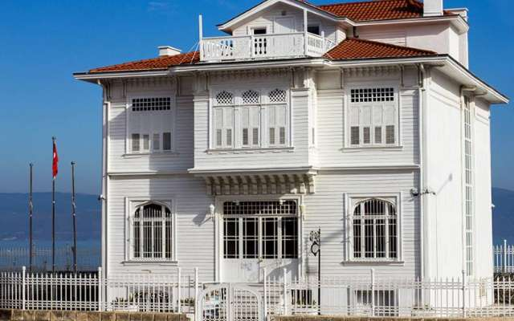
Casa Museo del Armisticio de MudanyaBursa · Museo Museo Monumento del Mausoleo de BodrumMuğla · Museo
Museo Monumento del Mausoleo de BodrumMuğla · Museo Yacimiento de CnidoMuğla · Yacimiento arqueológico
Yacimiento de CnidoMuğla · Yacimiento arqueológico Museo de MuğlaMuğla · MuseoMuseo de MuşMuş · Museo
Museo de MuğlaMuğla · MuseoMuseo de MuşMuş · Museo Yacimiento de MyraAntalya · Yacimiento arqueológico
Yacimiento de MyraAntalya · Yacimiento arqueológico Museo del Bastión de NamazgâhÇanakkale · Museo
Museo del Bastión de NamazgâhÇanakkale · Museo Mazmorra y Museo de Namık KemalGazimağusa (Famagusta) · Museo
Mazmorra y Museo de Namık KemalGazimağusa (Famagusta) · Museo Casa de Necmi İğe - Museo EtnográficoEdirne · MuseoMuseo de Arqueología y Etnografía de HacıbektaşNevşehir · MuseoCasa Museo de Atatürk en HacıbektaşNevşehir · Museo
Casa de Necmi İğe - Museo EtnográficoEdirne · MuseoMuseo de Arqueología y Etnografía de HacıbektaşNevşehir · MuseoCasa Museo de Atatürk en HacıbektaşNevşehir · Museo Museo de NevşehirNevşehir · MuseoImaret de Nilüfer Hatun - Museo de Arte Turco e IslámicoBursa · MuseoYacimiento de Andaval (Niğde)Niğde · Yacimiento arqueológicoMuseo de NiğdeNiğde · Museo
Museo de NevşehirNevşehir · MuseoImaret de Nilüfer Hatun - Museo de Arte Turco e IslámicoBursa · MuseoYacimiento de Andaval (Niğde)Niğde · Yacimiento arqueológicoMuseo de NiğdeNiğde · Museo Yacimiento de Nisa (Sultanhisar)Aydın · Yacimiento arqueológico
Yacimiento de Nisa (Sultanhisar)Aydın · Yacimiento arqueológico Yacimiento de OlymposAntalya · Yacimiento arqueológicoMuseo de OrduOrdu · Museo
Yacimiento de OlymposAntalya · Yacimiento arqueológicoMuseo de OrduOrdu · Museo Museo Osman Hamdi BeyKocaeli · MuseoMuseo de OsmaniyeOsmaniye · MuseoMuseo de la Casa OtomanaBursa · Museo
Museo Osman Hamdi BeyKocaeli · MuseoMuseo de OsmaniyeOsmaniye · MuseoMuseo de la Casa OtomanaBursa · Museo Castillo de OteloGazimağusa (Famagusta) · Castillo y edificio histórico
Castillo de OteloGazimağusa (Famagusta) · Castillo y edificio histórico Yacimiento de PataraAntalya · Yacimiento arqueológico
Yacimiento de PataraAntalya · Yacimiento arqueológico Museo PeraEstambul · Museo
Museo PeraEstambul · Museo Yacimiento de PergeAntalya · Yacimiento arqueológico
Yacimiento de PergeAntalya · Yacimiento arqueológico Yacimiento de PerreAdıyaman · Yacimiento arqueológico
Yacimiento de PerreAdıyaman · Yacimiento arqueológico Yacimiento de PesinunteEskişehir · Yacimiento arqueológico
Yacimiento de PesinunteEskişehir · Yacimiento arqueológico Yacimiento de FaselisAntalya · Yacimiento arqueológico
Yacimiento de FaselisAntalya · Yacimiento arqueológico Yacimiento de PrieneAydın · Yacimiento arqueológico
Yacimiento de PrieneAydın · Yacimiento arqueológico Museo Rahmi M. KoçEstambul · Museo
Museo Rahmi M. KoçEstambul · Museo Museo de Pintura y EsculturaAnkara · Museo
Museo de Pintura y EsculturaAnkara · Museo Casa Museo de Atatürk en RizeRize · MuseoMuseo de RizeRize · Museo
Casa Museo de Atatürk en RizeRize · MuseoMuseo de RizeRize · Museo Termas romanas de AnkaraAnkara · Yacimiento arqueológico
Termas romanas de AnkaraAnkara · Yacimiento arqueológico Fortaleza de Rumeli HisarıEstambul · Castillo y edificio histórico
Fortaleza de Rumeli HisarıEstambul · Castillo y edificio histórico Yacimiento de RumkaleGaziantep · Yacimiento arqueológico
Yacimiento de RumkaleGaziantep · Yacimiento arqueológico Yacimiento de SagalassosBurdur · Yacimiento arqueológico
Yacimiento de SagalassosBurdur · Yacimiento arqueológico Museo de SakaryaSakarya · Museo
Museo de SakaryaSakarya · Museo Museo Sakıp SabancıEstambul · Museo
Museo Sakıp SabancıEstambul · Museo Yacimiento de SalaminaGazimağusa (Famagusta) · Yacimiento arqueológico
Yacimiento de SalaminaGazimağusa (Famagusta) · Yacimiento arqueológico Museo de SamsunSamsun · Museo
Museo de SamsunSamsun · Museo Ciudad subterránea de Saratlı KırkgözAksaray · Ciudad subterránea
Ciudad subterránea de Saratlı KırkgözAksaray · Ciudad subterránea Yacimiento de SardesManisa · Yacimiento arqueológico
Yacimiento de SardesManisa · Yacimiento arqueológico Baño romano de SarıkayaYozgat · Yacimiento arqueológico
Baño romano de SarıkayaYozgat · Yacimiento arqueológico Isla de Sedir (Cedreas)Muğla · Yacimiento arqueológico
Isla de Sedir (Cedreas)Muğla · Yacimiento arqueológico Mezquita SelimiyeLefkoşa (Nicosia) · Edificio religioso
Mezquita SelimiyeLefkoşa (Nicosia) · Edificio religioso Museo de SideAntalya · Museo
Museo de SideAntalya · Museo Yacimiento de SideAntalya · Yacimiento arqueológico
Yacimiento de SideAntalya · Yacimiento arqueológico Cueva de Astım (Silifke)Mersin · Espacio natural
Cueva de Astım (Silifke)Mersin · Espacio natural Casa de Atatürk y Museo Etnográfico de SilifkeMersin · Museo
Casa de Atatürk y Museo Etnográfico de SilifkeMersin · Museo Yacimiento de Ayatekla (Silifke)Mersin · Yacimiento arqueológico
Yacimiento de Ayatekla (Silifke)Mersin · Yacimiento arqueológico Simas del Cielo y el Infierno (Silifke)Mersin · Espacio natural
Simas del Cielo y el Infierno (Silifke)Mersin · Espacio natural Museo de SilifkeMersin · Museo
Museo de SilifkeMersin · Museo Museo de los Mosaicos de Narlıkuyu (Silifke)Mersin · MuseoCasa Museo de Atatürk en SilvanDiyarbakır · Museo
Museo de los Mosaicos de Narlıkuyu (Silifke)Mersin · MuseoCasa Museo de Atatürk en SilvanDiyarbakır · Museo Yacimiento de SimenaAntalya · Yacimiento arqueológicoMuseo Etnográfico Arslantorunlar de SinopSinop · MuseoMuseo de SinopSinop · Museo
Yacimiento de SimenaAntalya · Yacimiento arqueológicoMuseo Etnográfico Arslantorunlar de SinopSinop · MuseoMuseo de SinopSinop · Museo Museo Arqueológico de SivasSivas · Museo
Museo Arqueológico de SivasSivas · Museo Museo de Atatürk y del Congreso de SivasSivas · MuseoYacimiento de SobesosNevşehir · Yacimiento arqueológicoTumba Monumental de SofrazAdıyaman · Yacimiento arqueológico
Museo de Atatürk y del Congreso de SivasSivas · MuseoYacimiento de SobesosNevşehir · Yacimiento arqueológicoTumba Monumental de SofrazAdıyaman · Yacimiento arqueológico Yacimiento de SoliLefke (Lefka) · Yacimiento arqueológico
Yacimiento de SoliLefke (Lefka) · Yacimiento arqueológico Iglesia de San Antonio de PaduaEstambul · Edificio religioso
Iglesia de San Antonio de PaduaEstambul · Edificio religioso Monasterio de San BernabéGazimağusa (Famagusta) · Edificio religioso
Monasterio de San BernabéGazimağusa (Famagusta) · Edificio religioso Castillo de San HilariónGirne (Kyrenia) · Castillo y edificio histórico
Castillo de San HilariónGirne (Kyrenia) · Castillo y edificio histórico Museo Monumento de San PedroHatay · Museo
Museo Monumento de San PedroHatay · Museo Monasterio de San SimeónHatay · Edificio religioso
Monasterio de San SimeónHatay · Edificio religioso Yacimiento de EstratoniceaMuğla · Yacimiento arqueológico
Yacimiento de EstratoniceaMuğla · Yacimiento arqueológico Mezquita del Sultán Ahmed (Mezquita Azul)Estambul · Edificio religioso
Mezquita del Sultán Ahmed (Mezquita Azul)Estambul · Edificio religioso Iglesia armenia de Surp GiragosDiyarbakır · Edificio religioso
Iglesia armenia de Surp GiragosDiyarbakır · Edificio religioso Museo Ertuğrul Gazi de SöğütBilecik · Museo
Museo Ertuğrul Gazi de SöğütBilecik · Museo Mezquita de SüleymaniyeEstambul · Edificio religioso
Mezquita de SüleymaniyeEstambul · Edificio religioso Monasterio de SumelaTrebisonda · Edificio religiosoMuseo Monumento de TaxiarchisBalıkesir · Museo
Monasterio de SumelaTrebisonda · Edificio religiosoMuseo Monumento de TaxiarchisBalıkesir · Museo Prisión histórica de SinopSinop · Castillo y edificio histórico
Prisión histórica de SinopSinop · Castillo y edificio histórico Museo Monumento de San Pablo (Tarso)Mersin · Museo
Museo Monumento de San Pablo (Tarso)Mersin · Museo Pozo de San Pablo (Tarso)Mersin · Edificio religioso
Pozo de San Pablo (Tarso)Mersin · Edificio religioso Ciudad subterránea de TatlarinNevşehir · Ciudad subterráneaCasa Museo de Atatürk en MuratlıTekirdağ · MuseoMuseo de TekirdağTekirdağ · Museo
Ciudad subterránea de TatlarinNevşehir · Ciudad subterráneaCasa Museo de Atatürk en MuratlıTekirdağ · MuseoMuseo de TekirdağTekirdağ · Museo Yacimiento de TeosIzmir · Yacimiento arqueológico
Yacimiento de TeosIzmir · Yacimiento arqueológico Yacimiento de TermessosAntalya · Yacimiento arqueológicoMuseo de TireIzmir · MuseoCasa de Atatürk y Museo Etnográfico de TokatTokat · Museo
Yacimiento de TermessosAntalya · Yacimiento arqueológicoMuseo de TireIzmir · MuseoCasa de Atatürk y Museo Etnográfico de TokatTokat · Museo Museo de TokatTokat · Museo
Museo de TokatTokat · Museo Palacio de TopkapıEstambul · Castillo y edificio histórico
Palacio de TopkapıEstambul · Castillo y edificio histórico Museo de Trebisonda (Mansión Kostaki)Trebisonda · Museo
Museo de Trebisonda (Mansión Kostaki)Trebisonda · Museo Museo de TroyaÇanakkale · Museo
Museo de TroyaÇanakkale · Museo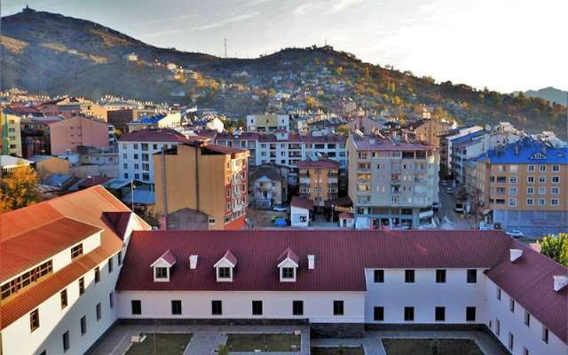
Museo de TunceliTunceli · Museo Museo de Arte Turco e IslámicoEstambul · MuseoMuseo de Arte Turco e Islámico de EdirneEdirne · Museo
Museo de Arte Turco e IslámicoEstambul · MuseoMuseo de Arte Turco e Islámico de EdirneEdirne · Museo Museo de Arte Turco-Islámico y EtnografíaErzurum · MuseoMuseo de UluborluIsparta · Museo
Museo de Arte Turco-Islámico y EtnografíaErzurum · MuseoMuseo de UluborluIsparta · Museo Yacimiento de UzuncaburçMersin · Yacimiento arqueológicoMuseo de UşakUşak · Museo
Yacimiento de UzuncaburçMersin · Yacimiento arqueológicoMuseo de UşakUşak · Museo Fortaleza de VanVan · Castillo y edificio histórico
Fortaleza de VanVan · Castillo y edificio histórico Museo de VanVan · Museo
Museo de VanVan · Museo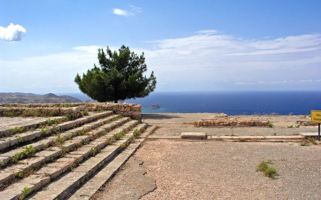
Palacio de VouniLefke (Lefka) · Yacimiento arqueológico Museo de YalvaçIsparta · Museo
Museo de YalvaçIsparta · Museo Casa Museo Şemaki de YenişehirBursa · Museo
Casa Museo Şemaki de YenişehirBursa · Museo Cisterna Basílica (Yerebatan)Estambul · Castillo y edificio histórico
Cisterna Basílica (Yerebatan)Estambul · Castillo y edificio histórico Yacimiento de YesemekGaziantep · Yacimiento arqueológico
Yacimiento de YesemekGaziantep · Yacimiento arqueológico Valle de Soğanlı (Yeşilhisar)Kayseri · Yacimiento arqueológico
Valle de Soğanlı (Yeşilhisar)Kayseri · Yacimiento arqueológico Museo de YozgatYozgat · Museo
Museo de YozgatYozgat · Museo Casa Museo de Yörük Ali EfeAydın · Museo
Casa Museo de Yörük Ali EfeAydın · Museo Museo de Arte Zeki MürenMuğla · Museo
Museo de Arte Zeki MürenMuğla · Museo Museo de los Mosaicos de ZeugmaGaziantep · Museo
Museo de los Mosaicos de ZeugmaGaziantep · Museo Yacimiento de ZeugmaGaziantep · Yacimiento arqueológico
Yacimiento de ZeugmaGaziantep · Yacimiento arqueológico Museo Ziya GökalpDiyarbakır · MuseoCentro de Interpretación de la Epopeya de ÇanakkaleÇanakkale · MuseoÁrea de recreación de la Media Luna Roja en ÇanakkaleÇanakkale · Museo
Museo Ziya GökalpDiyarbakır · MuseoCentro de Interpretación de la Epopeya de ÇanakkaleÇanakkale · MuseoÁrea de recreación de la Media Luna Roja en ÇanakkaleÇanakkale · Museo Museo de ÇankırıÇankırı · Museo
Museo de ÇankırıÇankırı · Museo Castillo de ÇavuştepeVan · Castillo y edificio históricoYacimiento de ÇevlikHatay · Yacimiento arqueológico
Castillo de ÇavuştepeVan · Castillo y edificio históricoYacimiento de ÇevlikHatay · Yacimiento arqueológico Museo de ÇeşmeIzmir · Museo
Museo de ÇeşmeIzmir · Museo Museo de los Azulejos de KütahyaKütahya · Museo
Museo de los Azulejos de KütahyaKütahya · Museo Museo de ÇorumÇorum · MuseoMuseo de ÖdemişIzmir · Museo
Museo de ÇorumÇorum · MuseoMuseo de ÖdemişIzmir · Museo Ciudad subterránea de ÖzkonakNevşehir · Ciudad subterráneaMuseo de ÜrgüpNevşehir · Museo
Ciudad subterránea de ÖzkonakNevşehir · Ciudad subterráneaMuseo de ÜrgüpNevşehir · Museo Palacio de İshak PaşaAğrı · Castillo y edificio histórico
Palacio de İshak PaşaAğrı · Castillo y edificio histórico Museo de Iconos de İskeleİskele (Trikomo) · Museo
Museo de Iconos de İskeleİskele (Trikomo) · Museo Museo de Historia de la Ciencia y la Tecnología en el IslamEstambul · Museo
Museo de Historia de la Ciencia y la Tecnología en el IslamEstambul · Museo Museos Arqueológicos de EstambulEstambul · Museo
Museos Arqueológicos de EstambulEstambul · Museo Torre de GálataEstambul · Castillo y edificio históricoMuseo del Aeropuerto de EstambulEstambul · Museo
Torre de GálataEstambul · Castillo y edificio históricoMuseo del Aeropuerto de EstambulEstambul · Museo Istanbul ModernEstambul · Museo
Istanbul ModernEstambul · Museo Museo Arqueológico de IzmirIzmir · MuseoMuseo Atatürk de IzmirIzmir · Museo
Museo Arqueológico de IzmirIzmir · MuseoMuseo Atatürk de IzmirIzmir · Museo Fábrica de Cultura y Arte de IzmirIzmir · MuseoMuseo de Pintura y Escultura de IzmirIzmir · Museo
Fábrica de Cultura y Arte de IzmirIzmir · MuseoMuseo de Pintura y Escultura de IzmirIzmir · Museo Museo de İznikBursa · MuseoMuseo Arqueológico de ŞanlıurfaŞanlıurfa · Museo
Museo de İznikBursa · MuseoMuseo Arqueológico de ŞanlıurfaŞanlıurfa · Museo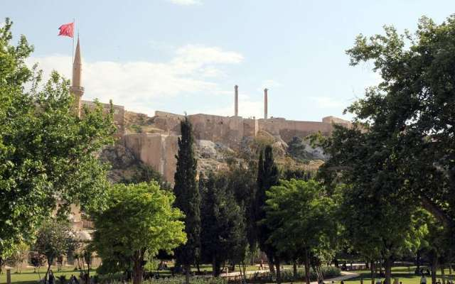
Castillo de ŞanlıurfaŞanlıurfa · Castillo y edificio histórico